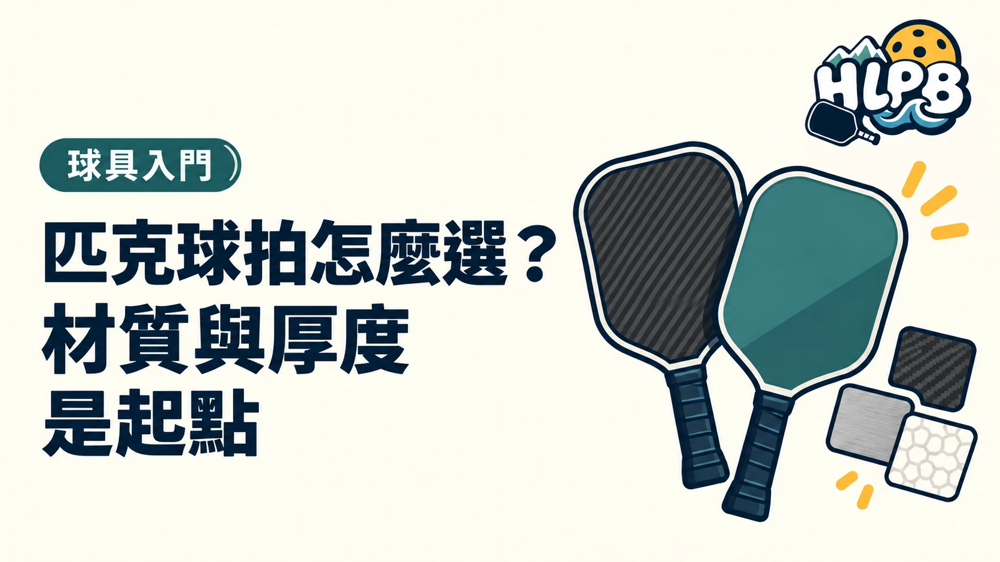

買拍時，規格表常把碳纖維、蜂巢、14mm、16mm 寫在一起。這些其實在說不同部位。先分清楚拍面、內芯與厚度，才知道自己在比較什麼。
規格表先拆成三層
| 項目 | 在說什麼 | 比較時看哪裡 |
|---|---|---|
| 拍面材質 | 直接接觸球的外層材料 | 碳纖維、玻璃纖維，是否混合鋪層 |
| 表面處理 | 拍面外層的紋理或處理方式 | 原廠如何說明紋理與塗層 |
| 內芯結構 | 拍面裡面的支撐結構 | 蜂巢或泡棉、材質與結構描述 |
| 厚度 | 規格標示的拍體或內芯厚度 | 實際毫米數，以及原廠標示方式 |
「碳纖維＋蜂巢內芯」可以同時出現在一支拍上，因為兩者不是互相取代的分類。
碳纖維和玻璃纖維差在哪？
| 拍面 | 可以先理解的材料差異 | 還需要核對 |
|---|---|---|
| 碳纖維 | JOOLA 的材料介紹以較高剛性說明其特性 | 碳纖維層、表面處理、內芯與整拍設計 |
| 玻璃纖維 | JOOLA 描述其相較碳纖維更有撓曲性，會影響回彈反應 | 具體型號的回彈與手感，不能只看材料名稱 |
| 混合拍面 | 不同材料以鋪層等方式組合 | 使用哪些材料、怎麼組合，而非只看「複合」二字 |
這是材料差異的入門方向，不是整支球拍的排名。同樣寫碳纖維，也可能有不同表面與內芯設計。不要把所有碳纖維拍都當成同一種手感。
原廠寫的材質是規格資料。「好控」「彈」「容易打深」則涉及整拍與使用者感受，應分開看。沒有試打或測試資料，不直接把材料名稱改寫成性能保證。
14mm 與 16mm，怎麼比較才有意義？
| 比較方向 | 14mm | 16mm |
|---|---|---|
| 在 JOOLA 選拍指南中的取向 | 較強調出球反應與快節奏 | 較強調控制與穩定 |
| 比較的前提 | 優先和同系列、同拍型版本相比 | 優先和同系列、同拍型版本相比 |
| 自己要確認 | 短動作出球是否太長，能否掌握力道 | 是否符合希望的出球反應與使用感受 |
先比較同系列的不同厚度，再比較不同系列。 若兩支拍連拍面、內芯、長寬和重量都不同，就不能把所有差異歸因於 2mm。
16mm 也不是「只能控制」，14mm 也不是「只能攻擊」。品牌指南提供的是設計方向，自己的擊球動作和整拍結構仍會影響結果。
內芯為什麼也要看？
內芯是拍面下方的結構，會影響支撐與擊球反應。Selkirk 的結構指南列出聚丙烯等聚合物蜂巢，以及不同泡棉材料。
| 規格用語 | 先看懂這件事 |
|---|---|
| 聚丙烯／PP 蜂巢 | 材料與蜂巢結構的描述，仍需看具體設計 |
| 泡棉內芯 | 泡棉種類並不只有一種，性能要看原廠對型號的說明 |
| 蜂巢搭配泡棉 | 需要確認泡棉用在什麼部位，不能直接當成整個內芯都是泡棉 |
不同內芯材料不能只排成「低階到高階」。先知道結構，再了解它是否符合自己的需求。
試打時，記錄自己真正感受到的差別
以下是 HLPB 的比較清單，不是器材測試分級。使用同一種球、相近環境，不只試一拍大力抽球。
| 觀察項目 | 記錄什麼 |
|---|---|
| 握持與揮拍 | 握把是否合適，連續揮拍是否順手 |
| 短球與擋球 | 是否容易打長或彈高，力道是否容易掌握 |
| 底線回球 | 能否用自己可控制的動作打到想要的深度 |
| 整體取捨 | 哪個差異最影響自己，能不能接受它的另一面 |
剛開始還不清楚打法，就先把握持、基本回球與規格理解做好。選拍的重點，是知道自己為什麼選這支，而不是把最多材料名詞的拍買回家。
T700、織紋與粗糙表面，為什麼不能當成同一件事？
材料牌號、纖維排列或織法，以及最外層表面處理，是規格表中的不同資訊。即使商品同樣強調碳纖維，仍需查看原廠對完整鋪層及內芯的描述。沒有測試方法、完整型號或官方說明時，不應只憑名詞推定旋轉、耐用或控制的高低。
泡棉也要問：用在哪裡？
拍緣填充、局部結構與主要內芯使用泡棉，不能直接當成同一種設計。先請販售者說明使用部位、材料及該型號的原廠定位。當蜂巢與泡棉同時出現在規格中，兩者未必矛盾，也無法僅憑『有泡棉』就推定整拍屬於哪個等級。
同系列不同厚度，先做這份對照
除了毫米數，也要列出總長、寬度、握柄長度、重量範圍與內芯版本。如果其他條件都相近，厚度比較才較容易解讀；若連結構都變了，就應把它當成兩支完整球拍來試。
選 14mm 或 16mm 之前，先回答自己希望改善短動作出球、連續回拍，還是落點控制，再用相同用球試打。不要把較薄等同於比較進階，也不要期待較厚自動消除失誤。材質與厚度是理解設計的入口，最後仍須確認整拍是否容易操作。
來源： - JOOLA，Carbon vs Fiberglass：官方資料 ↗ - JOOLA，Official Paddle Guide：官方資料 ↗ - Selkirk，Paddle Construction：官方資料 ↗ - Selkirk，Paddle Comparison：官方資料 ↗
材料與設計描述參考原廠資料，試打順序為 HLPB 編輯建議。資料核對：2026/10/19。
最後查證：2026-10-19｜資料來源：HLPB 編輯整理與正文所列官方資料
返回文章列表